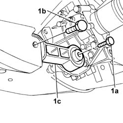
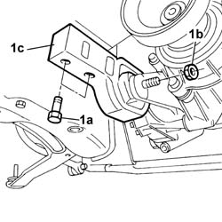

1008C32 GEARBOX LOWER REACTION ROD ' -R.R.
- Path
- Procedures > 10 ENGINE UNIT > 1008 POWER UNIT SUPPORTS > 1008C POWER UNIT REACTION ELEMENTS > 1008C32 GEARBOX LOWER REACTION ROD ' -R.R.
- Kind
- repair procedure (removal / refitting; the operation number is the code)
- Applies to
- all engines; all production periods
- Interactive page
- https://sloeber94.github.io/elrnDB-fPnd/en/#/2752413
Applies to: all engines; all production periods
 Removing
Removing
 Refitting
RefittingPosition the vehicle on a lift.
Raise the vehicle.
1. Unscrew the fixing bolt (1a) and bolt (1b) and remove the lower reaction link (1c).

Applies to: all engines; all production periods
Refitting
RemovingPosition the lower reaction link in its seat and tighten the bolt securing it to the gearbox to torque.
Fastening | Component | Ø | Value (daNm) | |
|---|---|---|---|---|
- | Bolt | POWER UNIT REACTION ROD | M12 X 1.25 | (Gearbox side) 8 |
Tighten the bolt fixing the lower reaction rod to the crossmember to torque.
Fastening | Component | Ø | Value (daNm) | |
|---|---|---|---|---|
- | Bolt | POWER UNIT REACTION ROD | M12 X 1.25 | (Crossmember side) 8 |
Lower the vehicle.
Remove the vehicle from the lift.
Applies to: engines: 1.2 8v, 1.3 JTD 16v; all production periods; only with equipment: 4x4
Removing
RefittingPosition the vehicle on a lift.
Raise the vehicle.
Op. 7055B54 UNDER-ENGINE GUARD - R R
1. Unscrew the fixing bolts (1a) and bolt (1b) and remove the lower reaction link (1c).

Applies to: engines: 1.2 8v, 1.3 JTD 16v; all production periods; only with equipment: 4x4
Refitting
RemovingPosition the lower reaction link in its seat and tighten the bolts securing it to the crossmember to torque.
Value daNm | Fastening | Component | Ø | |
|---|---|---|---|---|
- | 8 | Beam side | Bolt | M12 X 1.25 |
Tighten the bolt fixing it to the gearbox to the recommended torque.
Value daNm | Fastening | Component | Ø | |
|---|---|---|---|---|
- | 8 | Gearbox side | Bolt | M12 X 1.25 |
Op. 7055B54 UNDER-ENGINE GUARD - R R
Lower the vehicle.
Remove the vehicle from the lift.
Topics linked from this page (1)
Topics that link to this page (12)
- 1004B12 power unit with manual gearbox - r+r for versions with a/c
- 1004B13 POWER UNIT WITH MECHANIC TRANSMISSION - R.R. FOR MODELS WITH AIR-CONDITIONER AND FOUR-WHEEL DRIVE
- 1020D26 FLYWHEEL SIDE OIL SEAL COVER - R+R
- 1020D38 flywheel side oil seal - replace
- 1024B10 engine flywheel - r + r for versions with manual gearbox
- 1024B12 engine flywheels rr for versions with manual gearbox and air contioner
- 1810A20 clutch - r + r
- 1810A28 clutch - r r for manual gearbox with hydraulic selection versions
- 1820A24 thrust bearing linkage - r + r
- 2110A10 manual gearbox and differential - r + r
- 2110A11 manual gearbox with differential - r r for versions with hydraulic selection
- 5530A14 alternator - r+r for versions with air conditioner